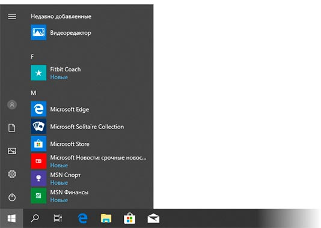
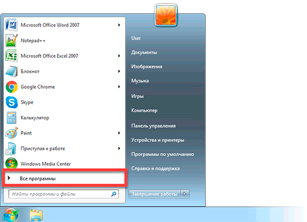
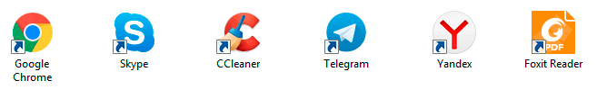
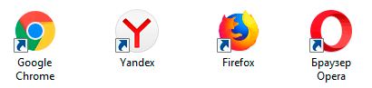
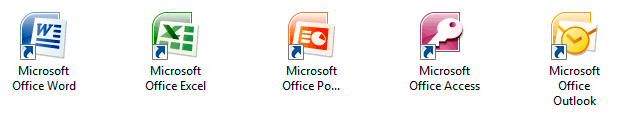

Необходимые программы для компьютера
В этом уроке я расскажу о важных программах для компьютера. Тех, без которых работать на нем будет весьма проблематично.
В любом компьютере установлено какое-то количество программ. Чтобы увидеть их, нужно нажать на кнопку «Пуск» в левом нижнем углу экрана. Откроется список всех приложений. Вот так он выглядит в Windows 10:
В Windows 7 он высветится, если нажать на пункт «Все программы» внизу.
Из этого списка можно открыть любое приложение, установленное на ПК.
На заметку. Если нужного приложения нет в списке, его можно найти через поиск. В Windows 10 для этого откройте «Пуск» и прямо в открытом меню напечатайте название. А в Windows 7 введите его в поле «Найти программы и файлы».
Как программы добавляются в систему
Есть два способа, как программы попадают в компьютер:
- Устанавливаются вместе с системой.
- Устанавливаются вручную.
Первые — это те, что идут вместе с Windows. Никто их специально не устанавливал. Они называются системные. Например, Internet Explorer (Microsoft Edge), Windows Media Player, все приложения из раздела «Стандартные» (в том числе «Игры»).
Вторые — те, что добавляются специально. . Обычно это происходит так: из интернета скачивается файл, потом он запускается, и программа устанавливается в систему.
Список обязательных программ
Есть несколько приложений, которые должны быть установлены на каждый ПК с системой Windows. Без них не будут работать некоторые устройства и не получится открыть файлы определенного типа — документы, архивы, книги.
Вот минимальный набор нужных программ:
- Драйверы
- Кодеки
- Антивирус
- Браузер
- Архиватор
- Офисный пакет
- Для открытия файлов pdf
А теперь подробнее о каждом типе и где взять такие приложения.
Драйверы — это такие примочки, которые «учат» систему работать с некоторыми устройствами. Причем как с внешними (например, с принтером), так и с внутренними (например, со звуковой картой). Без них компьютер будет работать некорректно.
Драйверы можно скачать из интернета. Лучше это делать с официального сайта производителя. Подробнее о них читайте в этом уроке.
На заметку. Если на компьютере работает интернет, идут игры, показывается видео и есть звук, а также работают подключенные к нему устройства, то обычно драйверы устанавливать не нужно. Они уже есть в системе.
Кодеки — отвечают за видео и звук. Без них некоторые мультимедиа-файлы не откроются. Так что если у вас не запускаются фильмы, установите кодеки K-Lite Codec Pack с официального сайта .
Антивирус — защита от вирусов. Самые известные — это Касперский и ESET NOD32, но они платные. Из бесплатных антивирусов советую Avast .
На заметку. Вирусы — это такое ПО, которое встраивается в систему и может сильно испортить жизнь. Блокировать и удалять файлы, показывать рекламу, воровать личные данные, тормозить ПК.
Браузер — приложение для выхода в интернет. Именно в нем вы сейчас читаете эту статью.
По умолчанию в системе уже есть один браузер — Internet Explorer или Microsoft Edge, но он не очень надежный и работает с перебоями. Желательно пользоваться другим браузером, например, Google Chrome, Яндекс, Mozilla Firefox, Opera.
Их можно бесплатно скачать/установить с официальных сайтов. Вот ссылки на самые популярные браузеры:
Устанавливать все необязательно — достаточно лишь одного.
Архиватор — для работы с архивами. Это такие специальные контейнеры, в которые запаковывают документы, фотографии и другие файлы. Для того чтобы открыть архив и получить доступ к файлам внутри него, должен быть установлен архиватор.
Самая популярная программа такого типа — WinRAR. Но она платная. Зато есть бесплатный аналог — 7-Zip. Она ничем не хуже, скачать можно с официального сайта.
Подробнее о том, что такое архиватор и как работать с подобными файлами, читайте в этом уроке .
Офисный пакет — это программы для работы с документами, таблицами, презентациями, базами данных. Без офисных приложений вы не сможете ни создать документ, ни открыть его.
Самый распространенный такой набор — Microsoft Office. В него входят такие программы как Word, Excel, Power Point, Acсess. Но это платный пакет. Зато есть достойная бесплатная альтернатива — OpenOffice.
Для открытия pdf. PDF — это такой тип файлов, в котором находится текст. Это может быть документ, брошюра, книга, прайс-лист и т. п. Если на ПК нет приложения для чтения pdf-файлов, то и открыть их вы не сможете.
Из бесплатных программ такого рода советую Foxit Reader.
Мессенджеры
Мессенджеры — это программы для общения по интернету. Потихоньку они вытесняют телефоны и электронную почту.
Мессенджеры не являются обязательными для компьютера, но очень важны для многих пользователей. Ведь через них можно звонить, переписываться, пересылать фото и документы. И это бесплатно — нужен только интернет.
Наиболее распространенные мессенджеры — это Skype (скайп), WhatsApp (вацап), Viber (вайбер), Telegram (телеграм). Если скайп изначально был разработан для общения через ПК, то другие — это приложения для мобильных.
Вот ссылки на официальные сайты — там их можно бесплатно скачать:
Обратите внимание, WhatsApp, Viber и Telegram — это приложения для телефонов. У каждого из них есть компьютерная версия, но часто она бесполезна без мобильной.